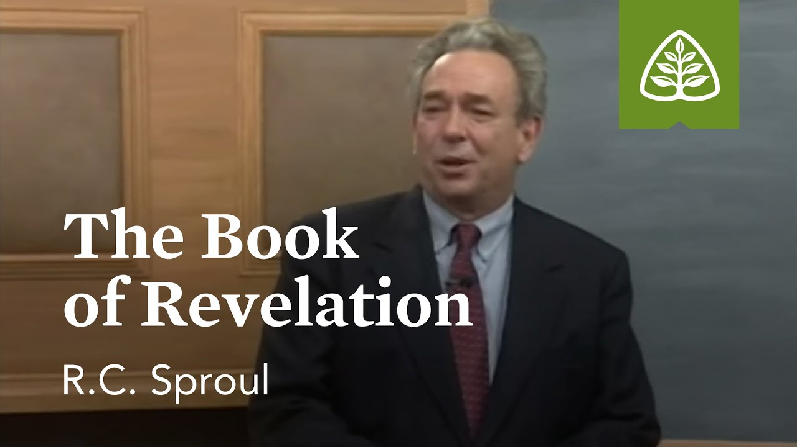

启示录 · 欧陆改革宗深读 · v3.0.0
背景 · 时间 · 地图 多米田、帝王崇拜、拔摩岛与亚细亚七城：为什么写、写给谁、在什么处境中读
重点（金色底纹）
难点（波浪下划线）
圣约（紫色实线）
术语（青色虚线）
记忆钩（橙色波线）
应用（绿色实线）
经文出处
📘📗📕📒 CCI 逐字引文
📙 威斯敏斯特
区块：💎重点 ⚠️难点 🧠记忆 📘信条 🌱应用
💎 一句话抓住写作处境 皇帝要当神，公会要你献祭，会堂不再掩护你，教会里有人已经妥协——基督在拔摩岛向被流放的约翰显现，把安慰与警告 一并写下。
一、为什么写？前因后果 1 主后 81–96 年，多米田 强化皇帝崇拜，亚细亚各城争相建庙表忠（以弗所 89/90 年）
➜ 2 行业公会宴席、城市节庆都要向神明与皇帝献祭；拒绝者失去生计、被告发
➜ 3 犹太会堂与教会决裂，基督徒失去「合法宗教」的保护（「撒但一会的」启2:9；3:9）
➜ 4 教会内部：有人妥协（巴兰、耶洗别、尼哥拉党），有人富足而冷淡（老底嘉）
➜ 5 使徒约翰被放逐到拔摩岛；在主日，复活的基督向他显现
➜ 🌅 基督命令约翰「你所看见的当写在书上，达与……那七个教会」（启1:11 ）
🎯 写作目的 安慰 受逼迫的信徒：羔羊已经得胜，历史在神手中警告 妥协的信徒：不可向帝王崇拜与偶像宴席低头呼召 所有人悔改、敬拜创造主与羔羊揭露 属灵的真相：凯撒背后是龙，罗马的荣华是巴比伦📌 基本资料 作者 ：约翰（启1:1 ；启1:9 ），早期教会一致认为是使徒约翰（游斯丁、爱任纽）时间 ：约主后 95 年（多米田末期，爱任纽《驳异端》5.30.3）；少数主张约 68 年（尼禄后）地点 ：拔摩岛（以弗所西南约 90 公里的小岛，约 34 平方公里）读者 ：亚细亚省七个教会，及历代众教会体裁 ：启示文学 + 预言（启1:3 ）+ 书信（启1:4 ）📅 写作年代：两种主张 晚期（约 95 年） 早期（约 65–70 年） 外证 爱任纽（约 180）明说「接近多米田统治末期」；亚历山大的革利免、优西比乌同意 较晚的叙利亚文抄本题注提到尼禄 内证 老底嘉已富足（60 年地震后需时重建）；士每拿教会已存在相当时日；以弗所「离弃起初的爱」需要一代人 11:1-2 丈量圣殿似乎圣殿尚存；17:10「五位已经倾倒」按皇帝计算可落在尼禄后 支持者 多数改革宗与福音派（Hendriksen、Beale、Kistemaker） 过去派（Gentry 等）；荷兰「解放派」Vanderwaal 本站立场 采晚期说 ；但两说都承认书信的读者面对真实的罗马逼迫—
二、时间线（主前 605 — 主后 1939） 年代为学界常用的近似值；点按按钮筛选。
全部 旧约背景 罗马与亚细亚 基督与教会
前605 前539 前29 17 26 30 54 60 64 68 尼禄自杀；「四帝之年」（69）——少数学者以此时为启示录写作期
70 81 多米田即位，自称「我们的主与神」（苏埃托尼乌斯记载）
89 95 📜 约翰在拔摩岛领受启示录（爱任纽：多米田统治末期）
96 多米田遇刺；涅尔瓦即位，约翰回以弗所（优西比乌记载）
100 112 小普林尼致图拉真信：审问基督徒、要他们向皇帝像献祭
155 180 爱任纽《驳异端》记录写作年代；穆拉多利正典书目已列启示录
313 367 397 1522 路德初版序言对启示录存疑（1530 年改为较正面）
1561 1563 1619 1646 1830 1939 Hendriksen《得胜有余》：渐进平行与无千禧年
三、故事线：约翰看见了什么 1 🏝️ 被放逐 启 1 约翰因见证被流放拔摩（启1:9）
四、地图与历史地理 💎 怎么用这些地图 每一幅都先给离线示意图 （画在页面里，断网也能看），再配实时地图 。实时底图默认「自动」：按你的网络从 CARTO、OSM、Esri、OpenTopo、Wikimedia、高德等源中选用，某一源失败就立刻换下一个；若全部失败，示意图仍在。可随时手动切换底图（含卫星影像）。
🏝️ 拔摩岛：流放与启示的地点 以弗所西南约 90 公里的爱琴海小岛（约 34 平方公里）。罗马对较有身份者的流放（relegatio）常选此类岛屿。岛上传统「启示洞」与圣约翰修道院是后来朝圣建筑，但「约翰在拔摩」是经文本身的记录。
启示洞
查拉（Chora）
斯卡拉港
拔摩岛 Patmos
爱琴海小岛 · 约 34 平方公里 · 以弗所西南约 90 公里 · 罗马流放地（relegatio）
船←以弗所 主日异象 「我约翰……在 那名叫拔摩的海岛」 📐 离线示意图 · 零网络也可阅读；右侧/下方为实时地图（多底图，失败自动切换） 🛰️ 实时底图 自动（失败则切换下一源） CARTO Voyager CARTO 浅色 CARTO 深色 OpenStreetMap OSM Humanitarian Esri 街道 Esri 地形 Esri 卫星影像 OpenTopoMap Wikimedia 地图 高德（中国可达） 示意图已就绪 · 进入视窗后加载实时底图
放大可看到查拉小镇与斯卡拉港；示意图标出启示洞的传统位置。
🕯️ 七教会邮路与周边城市 七城按信使环形路线排列，约 500 公里。以弗所、士每拿、别迦摩是沿海大都会；推雅推喇至老底嘉沿河谷内陆。希拉波立（温泉）与歌罗西（冷泉）解释了老底嘉「不冷不热」的用水背景。
该苏斯河（Cayster） 赫木斯河（Hermus） 米安德河（Maeander） 吕高河谷 爱 琴 海 亚 细 亚 省 拔摩岛 以弗所 士每拿 别迦摩 推雅推喇 撒狄 非拉铁非 老底嘉 希拉波立 歌罗西 米利都 1 2 3 4 5 6 7
七灯台与邮路 · 启 1:11 的顺序
岛 拔摩 1 以弗所 2 士每拿 3 别迦摩 4 推雅推喇 5 撒狄 6 非拉铁非 7 老底嘉
环形约 500 公里：以弗所登陆 → 北上别迦摩 → 东南至老底嘉。七城=当时真实教会，也代表全教会（7=完全）。
📐 离线示意图 · 零网络也可阅读；右侧/下方为实时地图（多底图，失败自动切换） 🛰️ 实时底图 自动（失败则切换下一源） CARTO Voyager CARTO 浅色 CARTO 深色 OpenStreetMap OSM Humanitarian Esri 街道 Esri 地形 Esri 卫星影像 OpenTopoMap Wikimedia 地图 高德（中国可达） 示意图已就绪 · 进入视窗后加载实时底图
点按七城与周边遗址；实时地图可放大到考古公园级别。
🏛️ 帝王崇拜神庙遗址 亚细亚是皇帝崇拜最热衷的行省。别迦摩（主前 29，省内第一座罗马与奥古斯都庙）、士每拿（主后 26，提比留庙）、以弗所（主后 89/90，诸奥古斯都庙）构成「凯撒是主」的压力网。拒绝献祭，就失去行业公会、市场与法律保护。
亚细亚的帝王崇拜：三座关键神庙
别迦摩 · 罗马与奥古斯都
主前 29 · 省内第一座
「凯撒是主」
士每拿 · 提比留
主后 26 · 忠诚之城
「凯撒是主」
以弗所 · 诸奥古斯都
主后 89/90 · 多米田
「凯撒是主」
教会的对峙告白
「耶稣是主」· 不肯向皇帝像献祭 📐 离线示意图 · 零网络也可阅读；右侧/下方为实时地图（多底图，失败自动切换） 🛰️ 实时底图 自动（失败则切换下一源） CARTO Voyager CARTO 浅色 CARTO 深色 OpenStreetMap OSM Humanitarian Esri 街道 Esri 地形 Esri 卫星影像 OpenTopoMap Wikimedia 地图 高德（中国可达） 示意图已就绪 · 进入视窗后加载实时底图
这三座神庙是七封书信政治—宗教处境的考古学坐标。
🦅 多米田时期的罗马帝国 主后 81–96 年，帝国西起西班牙、东至幼发拉底。多米田强化宫廷崇拜（苏埃托尼乌斯记他让人称为「我们的主与神」）。启示录的地名分布在这条东西轴上。
意 大 利 亚 该 亚 亚 细 亚 叙 利 亚 犹 太 埃 及 地 中 海 幼发拉底河 帕 提 亚（安息） 罗马 拔摩 以弗所 耶路撒冷 巴比伦（遗址） 亚历山大 雅典 哥林多 叙利亚的安提阿 尼尼微（遗址） 推罗 米吉多 别迦摩
地 中 海
罗马（帝都）
拔摩
亚细亚七城
耶路撒冷
巴比伦遗址
米吉多
多米田治下的帝国（主后 81–96）
自称「我们的主与神」· 亚细亚争相建庙表忠 · 约翰被放逐拔摩
启示录的地理舞台：西起罗马，东至幼发拉底，南到埃及与犹大。
📐 离线示意图 · 零网络也可阅读；右侧/下方为实时地图（多底图，失败自动切换） 🛰️ 实时底图 自动（失败则切换下一源） CARTO Voyager CARTO 浅色 CARTO 深色 OpenStreetMap OSM Humanitarian Esri 街道 Esri 地形 Esri 卫星影像 OpenTopoMap Wikimedia 地图 高德（中国可达） 示意图已就绪 · 进入视窗后加载实时底图
切换卫星或地形底图，可看见地中海与两河流域的宏观格局。
🏙️ 巴比伦与罗马：代号如何落地 「巴比伦大城」首先唤起旧约的被掳之城，但启 17:9「七山」指向罗马。改革宗读法：它是约翰时代的罗马，也是每一世代抵挡神、自我神化的文明。不是「某一未来城要改名巴比伦」。
两座城：属世之城 vs 神的城
巴比伦 / 七山之城
历史：幼发拉底河畔的帝国
约翰时代：罗马（七丘，启17:9）
各时代神化自己的文明
⇄
新耶路撒冷
从天而降 · 神的帐幕在人间
📐 离线示意图 · 零网络也可阅读；右侧/下方为实时地图（多底图，失败自动切换） 🛰️ 实时底图 自动（失败则切换下一源） CARTO Voyager CARTO 浅色 CARTO 深色 OpenStreetMap OSM Humanitarian Esri 街道 Esri 地形 Esri 卫星影像 OpenTopoMap Wikimedia 地图 高德（中国可达） 示意图已就绪 · 进入视窗后加载实时底图
对照历史巴比伦遗址与罗马七丘：一个是代号的源头，一个是约翰时代的指向。
⛰️ 耶路撒冷与锡安山 11:8 把两个见证人的尸首放在「他们的主钉十字架之处」——历史的耶路撒冷。14:1「羔羊站在锡安山」则是属天视角中蒙救赎群体的聚集。两处都不可还原成一份现代旅游地图上的军事日程。
圣殿山
锡安山
橄榄山 →
耶路撒冷 · 锡安（启 11:8；14:1）
11:8「他们的主钉十字架之处」= 历史的耶路撒冷；14:1「锡安山」= 羔羊与十四万四千的属天群体。
📐 离线示意图 · 零网络也可阅读；右侧/下方为实时地图（多底图，失败自动切换） 🛰️ 实时底图 自动（失败则切换下一源） CARTO Voyager CARTO 浅色 CARTO 深色 OpenStreetMap OSM Humanitarian Esri 街道 Esri 地形 Esri 卫星影像 OpenTopoMap Wikimedia 地图 高德（中国可达） 示意图已就绪 · 进入视窗后加载实时底图
放大可看到圣殿山、锡安山脊与橄榄山的相对位置。
🌊 幼发拉底河：帝国的东界 罗马与帕提亚（安息）长期对峙于幼发拉底。启 9:14 四使在大河被释放；16:12 第六碗使河水干了。这是「东边的威胁被神征用、阻碍被除去」的旧约式语言，不是水文预报。
河源（亚美尼亚高原）
迦基米施
巴比伦
波斯湾
帕提亚（安息）→
幼发拉底：罗马的东界（启 9:14；16:12）
第六碗「大河幼发拉底的水就干了，要给那从日出之地所来的众王预备道路」：除去抵挡、迎来最后争战的象征。
📐 离线示意图 · 零网络也可阅读；右侧/下方为实时地图（多底图，失败自动切换） 🛰️ 实时底图 自动（失败则切换下一源） CARTO Voyager CARTO 浅色 CARTO 深色 OpenStreetMap OSM Humanitarian Esri 街道 Esri 地形 Esri 卫星影像 OpenTopoMap Wikimedia 地图 高德（中国可达） 示意图已就绪 · 进入视窗后加载实时底图
沿河从河源拖到波斯湾，可理解「东界」在第一世纪地图上的分量。
⚔️ 哈米吉多顿：米吉多丘与耶斯列平原 「哈米吉多顿」一般解为希伯来语「米吉多山」。米吉多控制沿海大道与耶斯列平原入口，是底波拉、基甸、约西亚的战场。约翰借用这个「列国交战之地」的地名，指末后的总对决（与 19:19、20:8 平行），而非预言一次可被卫星定位的现代会战。
米吉多丘
耶斯列平原（历代战场）
沿海大道在此交会
哈米吉多顿 = 米吉多山（启 16:16）
旧约中底波拉、基甸、约西亚作战之地 · 不是「未来某坐标系」，而是「最后争战」的象征地名
与 19:19、20:8 是同一场终局争战的不同镜头（渐进平行）。
📐 离线示意图 · 零网络也可阅读；右侧/下方为实时地图（多底图，失败自动切换） 🛰️ 实时底图 自动（失败则切换下一源） CARTO Voyager CARTO 浅色 CARTO 深色 OpenStreetMap OSM Humanitarian Esri 街道 Esri 地形 Esri 卫星影像 OpenTopoMap Wikimedia 地图 高德（中国可达） 示意图已就绪 · 进入视窗后加载实时底图
卫星图上可清楚看见凸起的古丘（tel）与广阔平原。
📜 旧约背景地点全图 启示录几乎不直接引用旧约，却处处暗引。把这些地点放回地图：出埃及的灾祸、西奈的会幕、锡安的圣殿、推罗的贸易、尼尼微与巴比伦的倾倒——全部在羔羊的异象里重述并完成。
旧约地理：启示录暗引的真实地点 埃及 十灾 / 出埃及 → 号与碗 西奈 会幕、祭司国度 耶路撒冷 圣殿、锡安 推罗 货物清单 → 启18 尼尼微 大城倾倒 巴比伦 被掳、兽、大淫妇 书珊 以斯帖 / 帝国东境 读懂启示录的钥匙不是报纸，而是这些地点所承载的旧约故事。 📐 离线示意图 · 零网络也可阅读；右侧/下方为实时地图（多底图，失败自动切换） 🛰️ 实时底图 自动（失败则切换下一源） CARTO Voyager CARTO 浅色 CARTO 深色 OpenStreetMap OSM Humanitarian Esri 街道 Esri 地形 Esri 卫星影像 OpenTopoMap Wikimedia 地图 高德（中国可达） 示意图已就绪 · 进入视窗后加载实时底图
这是「读经地图」，不是旅游清单：每个点连着一条旧约故事线。
🧠 七城口诀 以士别推，撒非老 ：以弗所、士每拿、别迦摩、推雅推喇、撒狄、非拉铁非、老底嘉——正是邮路顺序。
五、七城文化区域特征 城市 今地 城市特征 宗教/政治环境 书信中的回响 🏛️ <b>以弗所</b> 土耳其 塞尔丘克（Selçuk）附近遗址 亚细亚省最大的港口与商业中心，人口约二十多万 亚底米（Artemis）神庙 为古代七大奇迹之一得胜的，我必将神乐园中生命树的果子赐给他吃 👑 <b>士每拿</b> 土耳其 伊兹密尔（İzmir） 以「亚细亚的冠冕」（城市建在帕戈斯山，城墙环绕如冠冕）著称 早在主前 195 年就建庙供奉「罗马女神」，主后 26 年赢得为提比留 建庙的殊荣——对罗马最忠诚的城市。犹太社区势力强大。主后约 155 年，此地监督坡旅甲 殉道，名言「我服事他八十六年……」。 我就赐给你那生命的冠冕；得胜的必不受第二次死的害 🐍 <b>别迦摩</b> 土耳其 贝尔加马（Bergama） 亚细亚省的旧首府，卫城高约 300 米 有宏伟的宙斯祭坛 、医神亚斯克勒庇俄斯 （蛇为标志）的医疗中心、著名图书馆（「羊皮纸」parchment 一词源于此城名） 隐藏的吗哪；一块白石，上面写着新名 🧵 <b>推雅推喇</b> 土耳其 阿克希萨尔（Akhisar） 七城中最小，却是行业公会 （染工、皮革、陶工、铜匠等）最多的城市 卖紫色布的吕底亚 来自此城（徒16:14 ）。守护神是太阳神亚波罗（Tyrimnos），被称为宙斯之子。参加公会的宴席往往包括向守护神献祭。 制伏列国的权柄（铁杖辖管）；晨星 ⚰️ <b>撒狄</b> 土耳其 萨尔特（Sart）遗址 古吕底亚王国首都（克利萨斯王的富裕之城，传说最早铸造金银币） 卫城看似无法攻破，却两次因守军疏于防备 而被夜间偷袭攻陷（主前 547 年古列、主前 214 年安提阿古三世）。主后 17 年大地震被毁，靠提比留资助重建。城中有巨大的亚底米神庙与犹太会堂。 穿白衣；必不从生命册上涂抹他的名；在父和众使者面前认他的名 🚪 <b>非拉铁非</b> 土耳其 阿拉谢希尔（Alaşehir） 名字意为「兄弟之爱」（纪念别迦摩王阿塔路斯二世对兄长的忠诚） 位于通往弗吕家高原的门户 ，被视为传播希腊文化的「开着的门」。主后 17 年大地震后余震不断，居民多住城外 在神殿中作柱子，永不再出去；写上神的名、新耶路撒冷的名、我的新名 💰 <b>老底嘉</b> 土耳其 代尼兹利（Denizli）附近遗址 吕高河谷富裕的银行业 中心，以黑色羊毛布料和弗吕家眼药 闻名 主后 60 年大地震后拒绝罗马援助 、自费重建（塔西佗记载）——「我是富足……一样都不缺」。城中缺乏水源，靠石管从南方引来温吞且含石灰质的水 在我宝座上与我同坐
💎 一城一钥 每座城的地理与考古，都是书信用词的钥匙：以弗所的灯台与港口淤积、士每拿的冠冕、别迦摩的祭坛与剑权、推雅推喇的公会、撒狄两次被偷袭、非拉铁非的地震与改名、老底嘉的温水、银行与眼药。
🏺 考古与文化要点（精炼） 城市 考古可见 文化特征如何写进书信 以弗所 库雷特斯大道、大剧场、亚底米神庙遗址、多米田神庙平台 「灯台挪去」对照港口淤积与城市兴衰；neokoros 的自豪对照离弃起初的爱 士每拿 agora 遗址仍在今伊兹密尔市中心 「冠冕」对照依山而建的城墙；至死忠心对照对罗马的忠诚文化 别迦摩 卫城、宙斯祭坛基座、医神神庙、羊皮纸传统 「撒但座位」「剑」对照祭坛与总督的 ius gladii 推雅推喇 遗存较少，铭文多记行业公会 公会宴席 = 耶洗别的教训：吃祭偶像之物 撒狄 卫城、亚底米神庙、巨型会堂 两次夜间被偷袭 = 「要儆醒……我必临到你像贼一样」 非拉铁非 地震带上的阿拉谢希尔 「开着的门」「作柱子，不再出去」对照门户城市与不住余震 老底嘉 大遗址：街道、浴场、引水石管 温水、拒绝援助、银行/黑羊毛/眼药 = 不冷不热、自以为富足、要买真金白衣眼药
六、第一世纪末的八个关键词 👑 皇帝崇拜 亚细亚是帝国崇拜最热衷的省份；「凯撒是主」与「耶稣是主」直接冲突。
🧵 行业公会 工匠与商人的公会有守护神与宴席；不参加就难以谋生（「不能作买卖」启13:17）。
🕍 犹太会堂 第一世纪末会堂驱逐基督徒，基督徒失去罗马法下的豁免（启2:9；3:9）。
💰 罗马和平与繁荣 海上贸易把各省财富运往罗马（启18:11-19 的货物清单）。
🏛️ 城市竞争 各城争夺「神庙守护者」（neokoros）的荣誉，向罗马表忠。
🌋 地震带 亚细亚地震频繁（17、60 年）：撒狄、非拉铁非、老底嘉的书信都有地震背景的回响。
🔮 启示文学 《以诺一书》《以斯拉四书》《巴录二书》等犹太启示文学流行：异象、天使解说、象征数字。
🏝️ 流放刑 「流放到岛上」（relegatio）是罗马对较有身份之人的刑罚，拔摩即此类岛屿。
🔮 启示文学的特征（与启示录的不同） 特征 一般犹太启示文学 启示录 作者 托名古人（以诺、以斯拉） 真名约翰，同时代人 历史观 悲观：今世无望，只等未来 基督已经得胜，末世已开始 目的 秘密知识 不可封上 （22:10），在敬拜中公开朗读中心 天使、宇宙秘密 被杀的羔羊 伦理 较少 七封书信充满悔改与忠心的呼召
相关视频：写作年代 
▶ 28:10 The Book of Revelation：写作年代为何重要 来源：Ligonier Ministries 官方频道 · R.C. Sproul《The Last Days According to Jesus》 · 时长 28:10 · 英语 · 点击后才加载 youtube-nocookie 播放器（无自动播放） 改革宗对照： 严肃讨论外证与内证。该系列整体偏向部分过去派与早期写作说（70 年圣殿被毁之前）。本站采用晚期说（约主后 95 年，爱任纽外证），不以 11:1–2 为「圣殿尚存」的铁证。请当作另一种认真的改革宗声音，不要与本站默认立场混为一谈。
官方：YouTube · 官方频道 · 来源站点
← 📜 整本圣经·圣约 🧩 结构·解经 →